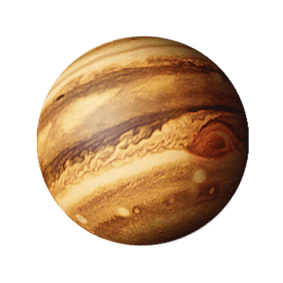
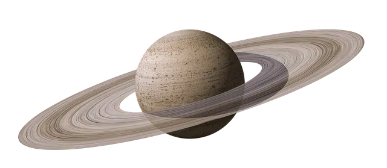

El Sol es la estrella más importante para nosotros porque nos ilumina, nos da
energía a través de sus rayos, alimenta las plantas y otros seres vivos.
MERCURIO
Es un planeta terrestre o rocoso, además de ser el planeta más cercano al Sol, es
también el más pequeño del sistema solar
VENUS
Es el planeta más parecido a la Tierra en cuanto a tamaño, composición y masa. Pero
su temperatura y sus condiciones atmosféricas son radicalmente diferentes e incompatibles con la vida.
TIERRA
Es el mayor de los planetas rocosos del sistema solar y una de sus características,
que podemos observar la mayoría de noches, es que cuenta con su propio satélite, la Luna.
MARTE
El planeta rojo es el segundo menor del sistema solar y cuenta con dos satélites:
Fobos y Deimos. Recientemente, se ha descubierto que Marte también contó en algún momento con agua en
estado líquido.
JÚPITER

Se trata del primero de los planetas exteriores, también conocidos como planetas
gaseosos. Es el mayor planeta y el segundo mayor cuerpo celeste del sistema solar.
SATURNO

Es el único planeta con un sistema de anillos que podemos ver desde la Tierra y,
probablemente, el que cuenta con más satélites. Es también un gigante gaseoso, y es el segundo mayor en
tamaño de nuestro sistema.
URANO
Se caracteriza por ser un planeta muy frío porque estar alejado del Sol. Su eje de
rotación está muy inclinado, y se ve de color azulado por los gases que forman su superficie.
NEPTUNO
Es el más alejado del Sol y esto lo convierte en el planeta más frío del Sistema
Solar. También, por el gas existente en su atmósfera, se ve de color azul. Posee un sistema de cuatro
anillos formados por partículas de polvo.